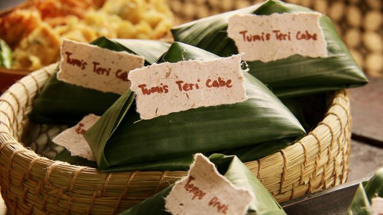
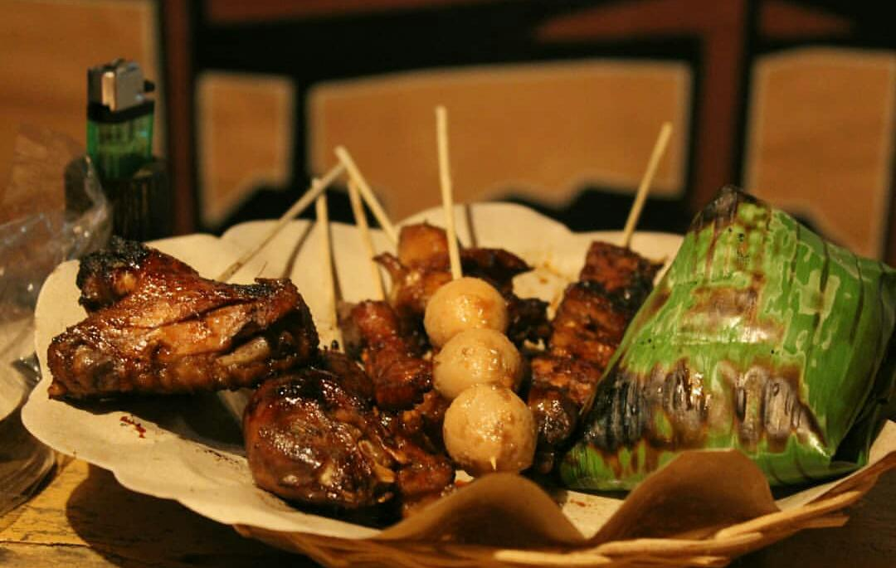
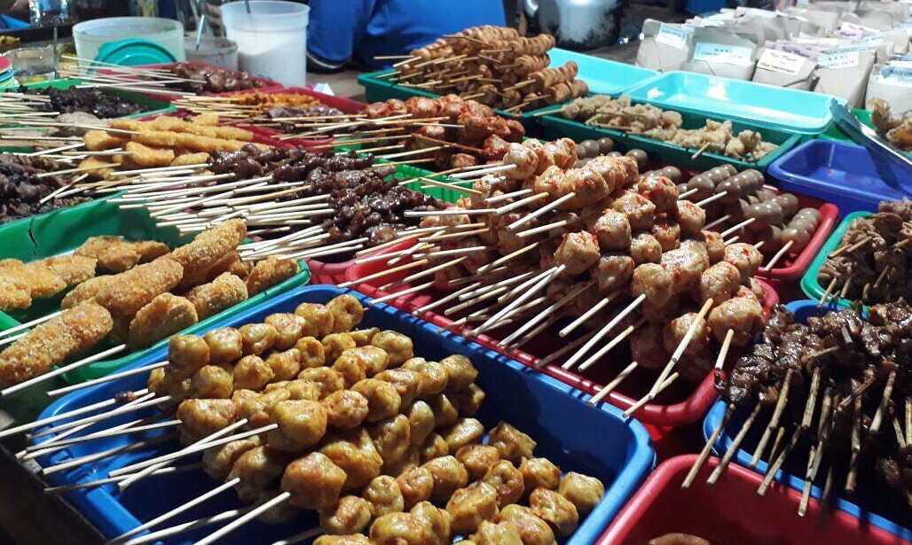
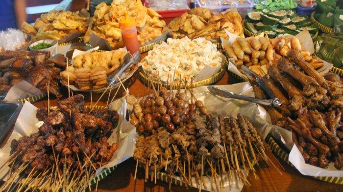
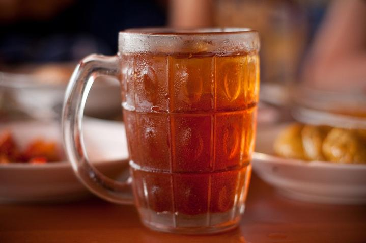
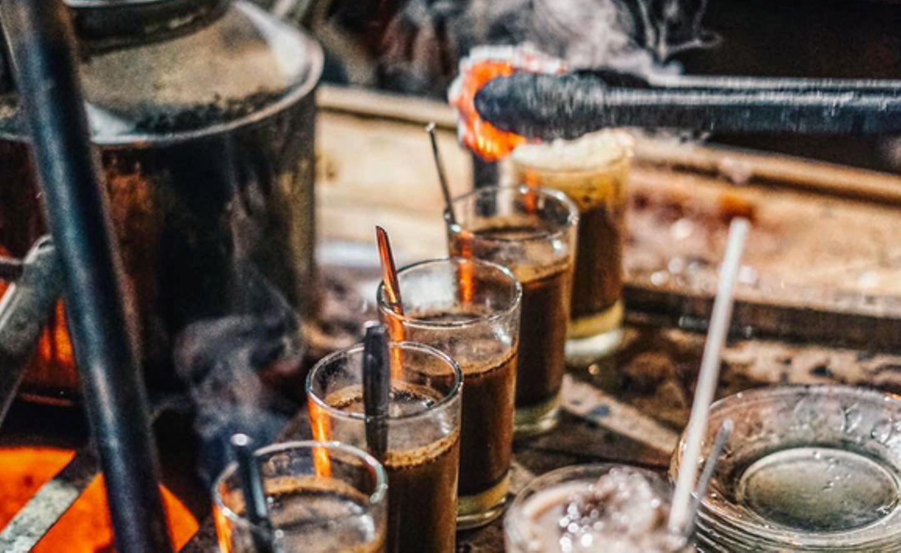

Profil
Angkringan Joss adalah warung khas Jogjakarta yang berdiri sejak tahun 1970. Usaha ini didirikan oleh sang owner yang bernama Parman. Owner angkringan ini asli kelahiran di Jogjakarta. Angkringan Joss terletak di lokasi jantung kota Jogjakarta, yakni di Jl. Malioboro No.37. Saat ini sang owner telah memiliki beberapa cabang angkringan di berbagai sudut kota Jogjakarta.
Aneka Menu
     | Makanan | Harga | Camilan | Harga | Minuman | Harga |
|---|---|---|---|---|---|
| Nasi Kucing | Rp.2500 | Aneka Sate | Rp.2500 | Kopi Joss | Rp.5000 |
| Nasi Bakar | Rp.3000 | Gorengan | Rp.1000 | Es Teh | Rp.3000 |